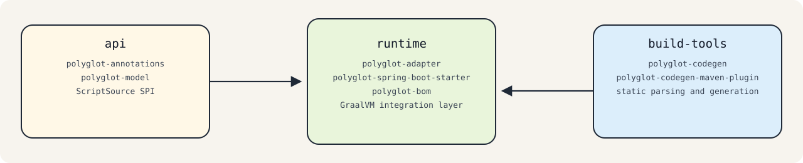

Architecture¶
Overview¶
polyglot-adapter is a multi-module Maven repository organized around a runtime adapter for dynamic languages built on top of the GraalVM Polyglot API.
The codebase is split into three logical layers:
api
├─ polyglot-annotations
└─ polyglot-model
runtime
├─ polyglot-bom
├─ polyglot-adapter
└─ polyglot-spring-boot-starter
build-tools
├─ polyglot-codegen
└─ polyglot-codegen-maven-plugin
This split is intentional:
apicontains shared contracts and does not depend on GraalVM execution or Springruntimecontains the adapter API implementation and application integrationbuild-toolsowns static analysis and source generation

Architectural Responsibilities¶
API Layer¶
The API layer is the common vocabulary shared by runtime and tooling.
polyglot-annotations provides:
@PolyglotClientSupportedLanguageConvention
polyglot-model provides:
- the contract model used by generators and parsers
- the portable polyglot type system
LanguageParserandScriptDescriptorCodegenConfig- the
ScriptSourceSPI used by the runtime
The API layer is deliberately free of GraalVM Context, Spring beans, and code generation implementation details.
Runtime Layer¶
The runtime layer is the actual GraalVM polyglot integration layer. It adapts Java contracts to guest-language execution.
polyglot-adapter provides:
AbstractPolyglotExecutorPyExecutorJsExecutorPolyglotHelperScriptSourceimplementations for classpath, filesystem, memory, and delegation- runtime exception types
polyglot-spring-boot-starter adds:
- auto-configuration for Python and JavaScript executors
- one
ScriptSourcebean per enabled language @EnablePolyglotClientsscanningPolyglotClientFactoryBean- optional actuator health/info and Micrometer metrics integration
- startup warmup logging
polyglot-bom is a consumption aid. It aligns runtime module versions with GraalVM dependencies for applications using the adapter.
Build-Tools Layer¶
The build-tools layer performs static contract extraction and Java source generation.
polyglot-codegen provides:
- parser dispatch through
DefaultContractGenerator - Python contract parsing
- Java type rendering
- Java interface source generation
- a small CLI entry point
polyglot-codegen-maven-plugin integrates the generator into Maven and registers generated sources during generate-sources.
JavaScript contract generation is not implemented yet. The runtime supports JavaScript execution, but the current code generator throws UnsupportedOperationException for JavaScript contracts.
Adapter Flow On Top of GraalVM¶
The runtime adapter follows this flow:
- The application chooses a
ScriptSource. - An executor creates or receives a GraalVM
Context. - The executor resolves the script name from the Java interface name.
- The script is loaded and evaluated.
- The executor validates that the expected guest export exists.
bind(...)creates a Java proxy that delegates interface method calls into the guest runtime.
Python Path¶
PyExecutor converts the interface simple name from camel case to snake case to locate the script. For ForecastService, it looks for forecast_service.py.
After evaluation it resolves the exported contract by interface name:
- first from polyglot bindings
- then from Python language bindings
It supports:
- class-style exports, where the exported value is executable and instantiated once
- object-style exports, where the exported value is a dictionary-like map of functions
Resolved Python targets are cached per Java interface using weak references.
JavaScript Path¶
JsExecutor resolves the script name the same way, for example forecast_service.js.
It evaluates the script once per interface and expects interface methods to map to executable JavaScript functions in language bindings. There is no separate exported-object convention like the Python path currently uses.
Script Resolution¶
The runtime depends on ScriptSource instead of performing I/O directly. Current implementations are:
ClasspathScriptSourceFileSystemScriptSourceInMemoryScriptSourceCompositeScriptSourceSpringResourceScriptSourcein the Spring starter
This abstraction was introduced during the runtime refactor that replaced older resource-loading assumptions with a single SPI shared across execution environments.
Code Generation Flow¶
The build-time pipeline is:
- Discover supported script files.
- Infer language from file extension.
- Build a
ScriptDescriptor. - Parse the script into a
ContractModel. - Render deterministic Java interfaces.
- Write generated sources under the configured output package.
Current parser coverage:
- Python: implemented, including class-style and dictionary-style exports
- JavaScript: declared extension point only, not implemented
How Java Interacts With Dynamic-Language Code¶
At runtime, Java does not call Python or JavaScript through handwritten Value member lookups. Instead:
- a Java interface defines the contract
- a script is resolved by convention through
ScriptSource - the adapter evaluates the script inside a GraalVM
Context - the adapter binds the contract and delegates method calls through GraalVM interop
This is the core architectural role of polyglot-adapter: it is not a replacement runtime, but an adapter API layered on top of GraalVM polyglot execution.
Code Generation and Runtime Integration¶
The code generation tooling is intentionally separate from runtime execution, but both parts are designed to work together.
polyglot-codegenparses supported script contracts into a neutral modelpolyglot-codegen-maven-pluginturns those contracts into Java interfaces during the buildpolyglot-adapterbinds those interfaces at runtime using the same naming and contract conventions
This separation keeps the build tools independent from GraalVM runtime execution while still producing Java types that fit naturally into the adapter API.
How Users Interact With the Runtime Adapter¶
There are two supported integration styles.
Direct Adapter Usage¶
Applications instantiate PyExecutor or JsExecutor directly and pass a ScriptSource.
This path gives explicit control over:
- context customization
- script locations
- validation timing
- lifecycle ownership
Spring Boot Usage¶
Applications add polyglot-spring-boot-starter, enable language-specific properties, and annotate contracts with @PolyglotClient.
The starter handles:
- context creation through
SpringPolyglotContextFactory - executor beans
- contract scanning and binding
- operational surfaces such as health, info, metrics, and startup logging
Architectural Evolution From Git History¶
Recent repository history highlights the main design direction:
- code generation was split into its own build-tools parent and decoupled from runtime execution
- runtime script loading was standardized around the
ScriptSourceSPI - the Spring starter gained warmup, metrics, actuator integration, and more stable auto-configuration
- Python code generation added support for both class-style and dictionary-style exports
Those changes reinforce the current architecture: shared contracts in api, adapter execution in runtime, and static generation in build-tools.